Relatório Final — Hackathon
Avaliação de Desempenho e Entrega Técnica
Nome do projeto: ATLETIZA (originalmente apresentado como "UniHub"; o nome evoluiu para ATLETIZA durante o processo)
Integrantes: Felipe, André, Gabriel, Júlia e Luiz
Repositório: https://github.com/Felipe-Alcantara/UniHub
O repositório mantém o nome UniHub por motivos históricos. O produto foi renomeado para ATLETIZA ao longo do desenvolvimento.
As atléticas universitárias enfrentam um problema crônico de dispersão de informação e fragmentação da comunicação. Hoje, o que uma atlética precisa comunicar aos alunos fica espalhado entre grupos de WhatsApp, posts e stories no Instagram, planilhas compartilhadas e mensagens privadas avulsas.
Esse modelo gera dois efeitos negativos:
O ATLETIZA ataca a raiz desse problema: centraliza treinos, eventos, modalidades, links, vitrine e comunicação em um único fluxo navegável, especializado nas regras reais do ecossistema de atléticas (entrada livre x seletiva, eventos públicos x privados, aprovações, listas de presença).
A solução é uma aplicação web responsiva mobile-first, com frontend e backend desacoplados.
| Camada | Tecnologias |
|---|---|
| Frontend | React 18, Vite 6, TailwindCSS 3, Framer Motion, Lucide React, React Router DOM 6 |
| Backend | Django, Django REST Framework, SQLite |
| Testes | Vitest, Testing Library |
Justificativa (criatividade na restrição de 48h): a stack priorizou velocidade de entrega e tecnologias acessíveis. React + Vite + Tailwind permitem uma interface caprichada e responsiva rapidamente; Django + DRF oferecem um backend convencional e sólido, sem depender de infraestrutura inacessível. O resultado é um MVP que roda localmente para a demo, mas permanece tecnicamente viável e evolutivo para uso real.
🔗 https://github.com/Felipe-Alcantara/UniHub
O MVP é navegável de ponta a ponta. As telas implementadas e funcionais:
| Funcionalidade | Descrição |
|---|---|
| Autenticação | Login com e-mail e senha validados no backend (Django). Perfis: aluno, diretoria e dev/admin. |
| Home / Landing | Tela pós-login com resumo do aluno, destaques e acesso rápido às áreas do hub. |
| Agenda | Eventos e treinos com filtros por tipo, visibilidade e modalidade. |
| Eventos e treinos | Tela de detalhe com regra de confirmação de presença. |
| Modalidades | Estados: participante, não participante, solicitação pendente, rejeitado, entrada livre e seletiva necessária. |
| Links importantes | Central de acesso rápido aos links da atlética. |
| Vitrine de produtos | Busca, filtro por categoria e contato simulado (sem checkout). |
| Carteirinha digital | Versão mockada da carteirinha do aluno. |
| Mural | Avisos e enquetes. |
| Painel da diretoria | Criação/edição de eventos, treinos, modalidades, links e produtos; aprovação/rejeição de seletivas; lista de presença de eventos gratuitos. |
| Horas complementares | Tela de acompanhamento de horas complementares. |
Em transparência com a avaliação, o MVP deixa explícito o que ainda é simulado: dados de usuários, eventos, modalidades, links, produtos, avisos e enquetes (persistência apenas em estado local), além dos fluxos administrativos do painel. O login é o fluxo realmente integrado ao backend neste ciclo; as demais áreas usam mocks estruturados (frontend/src/data/mock*.js), mantendo a demo honesta e o caminho aberto para integração real.
Aplicamos TDD pragmático sobre as regras de negócio centrais, com cobertura em: filtro da agenda; visibilidade público/privado; entrada livre x seletiva; confirmação de presença; controle de acesso aluno x diretoria/admin.
Prints capturados da aplicação em execução local (sessão real de aluno e de diretoria):
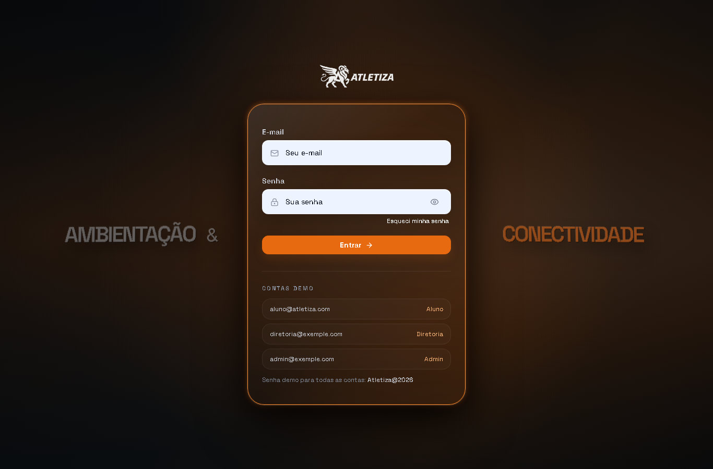
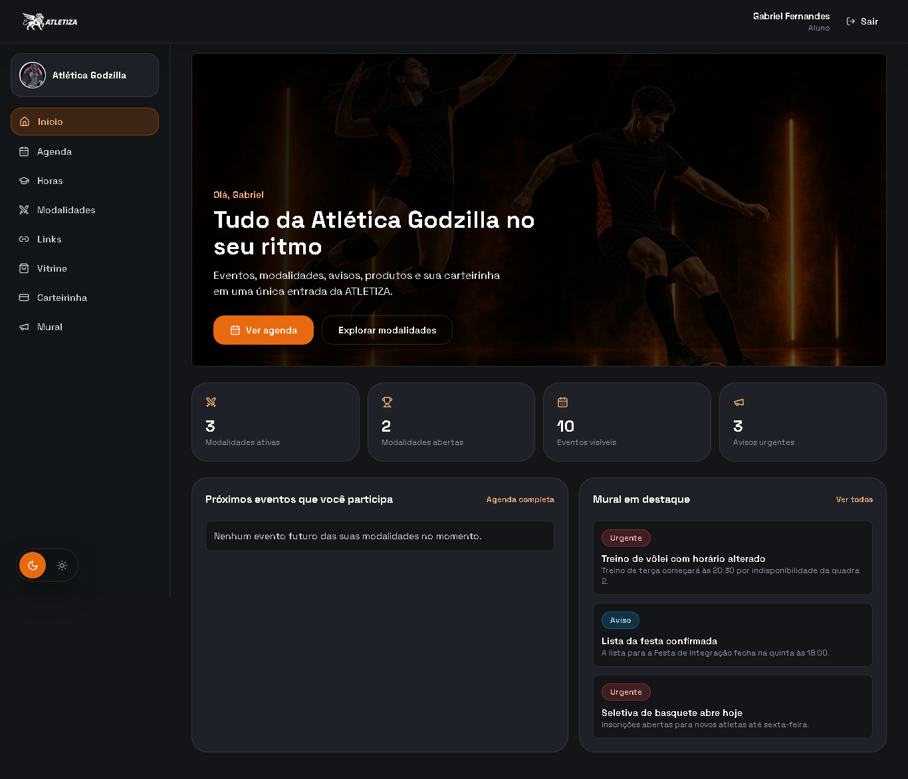
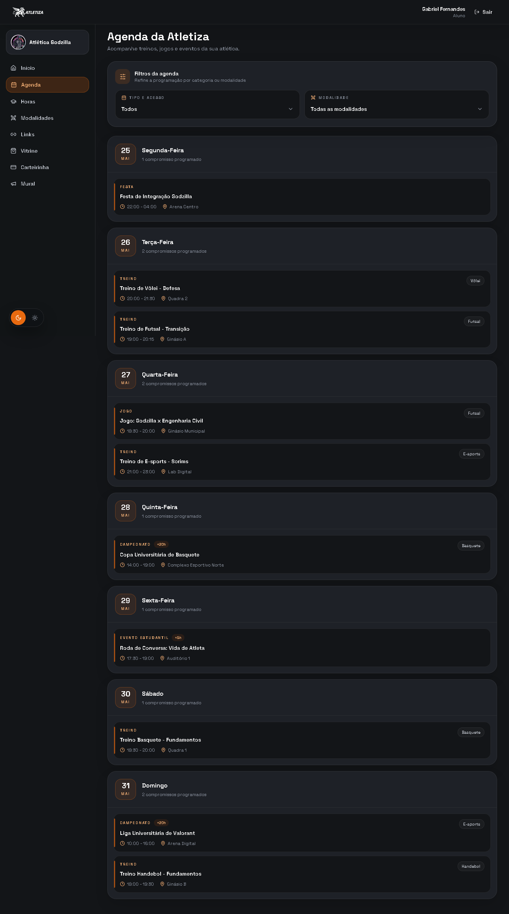
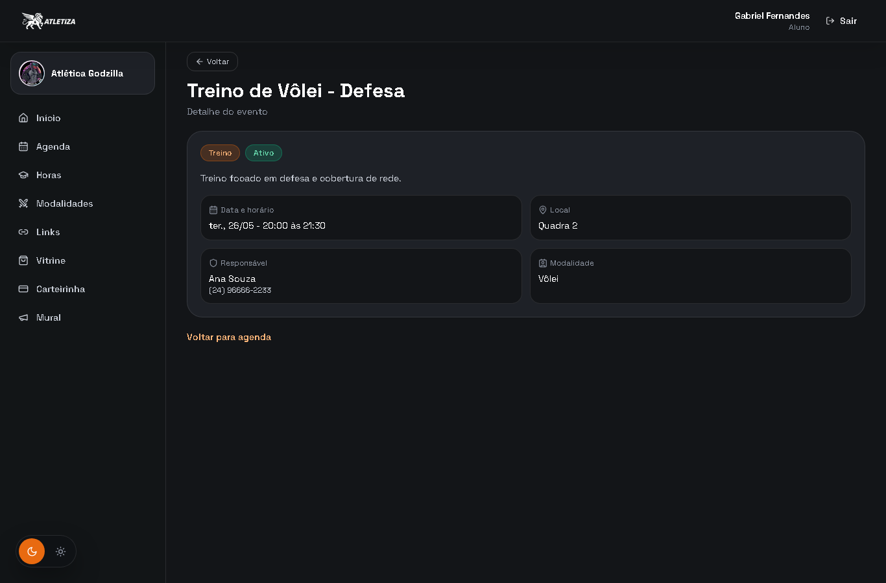
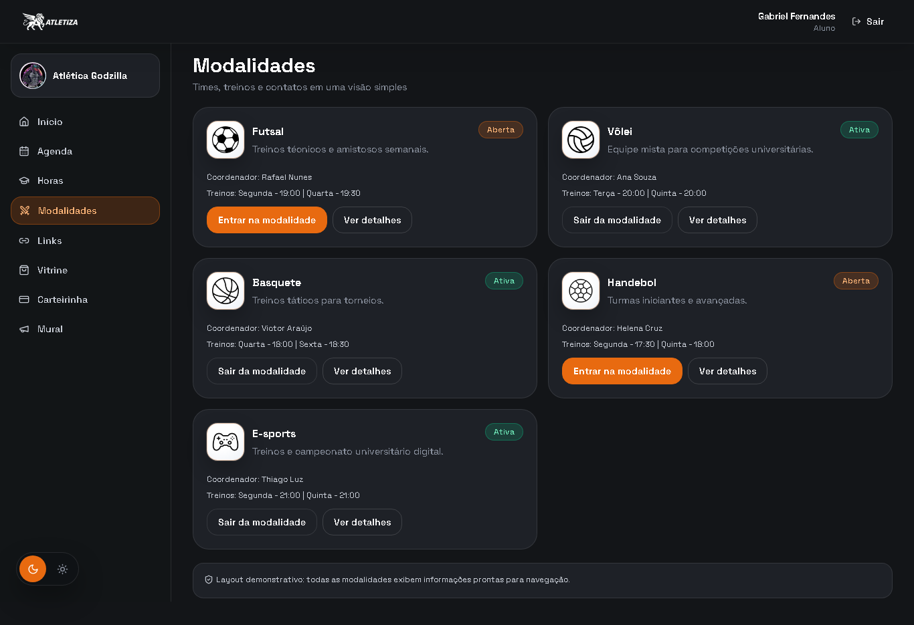
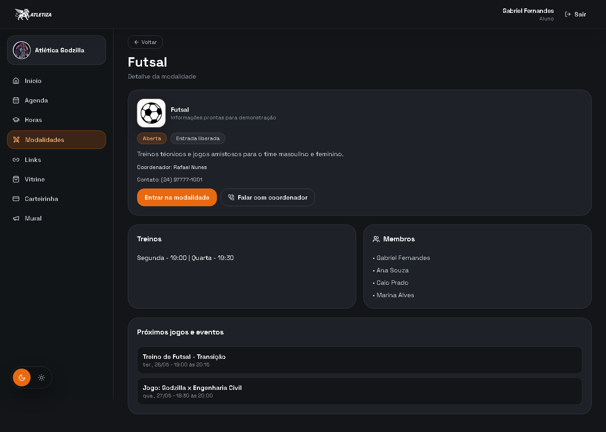
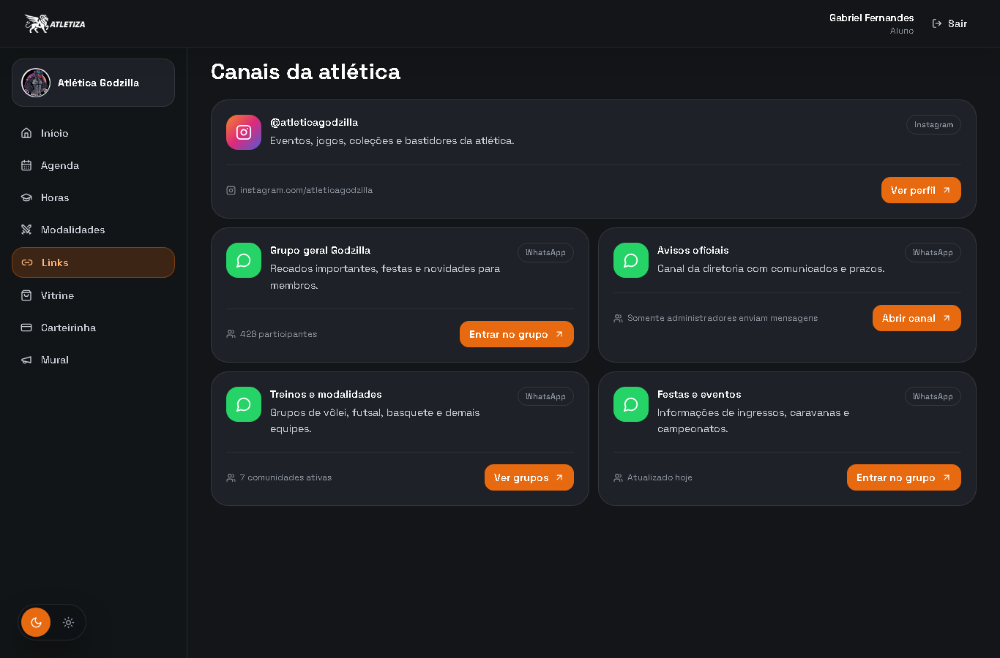
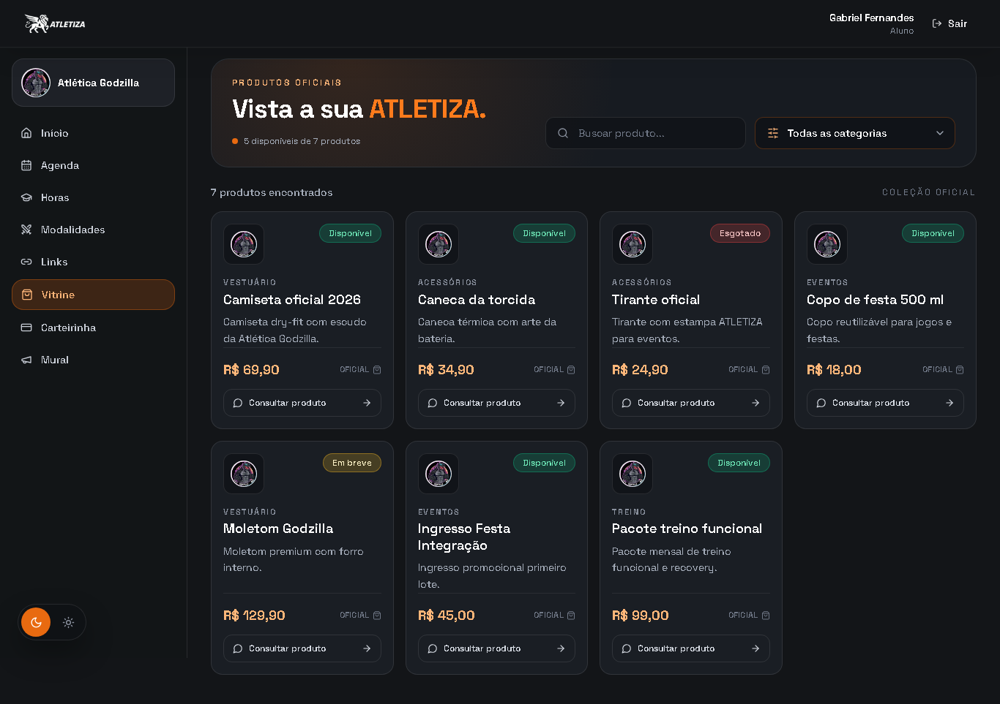
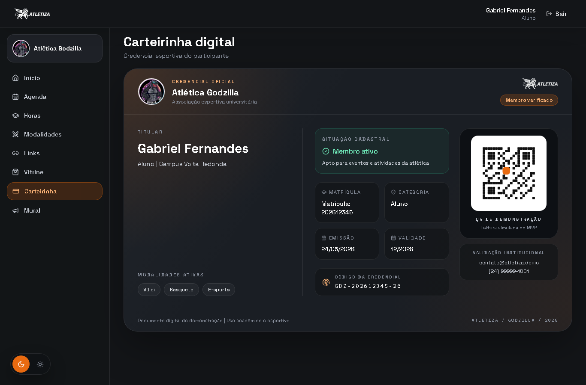
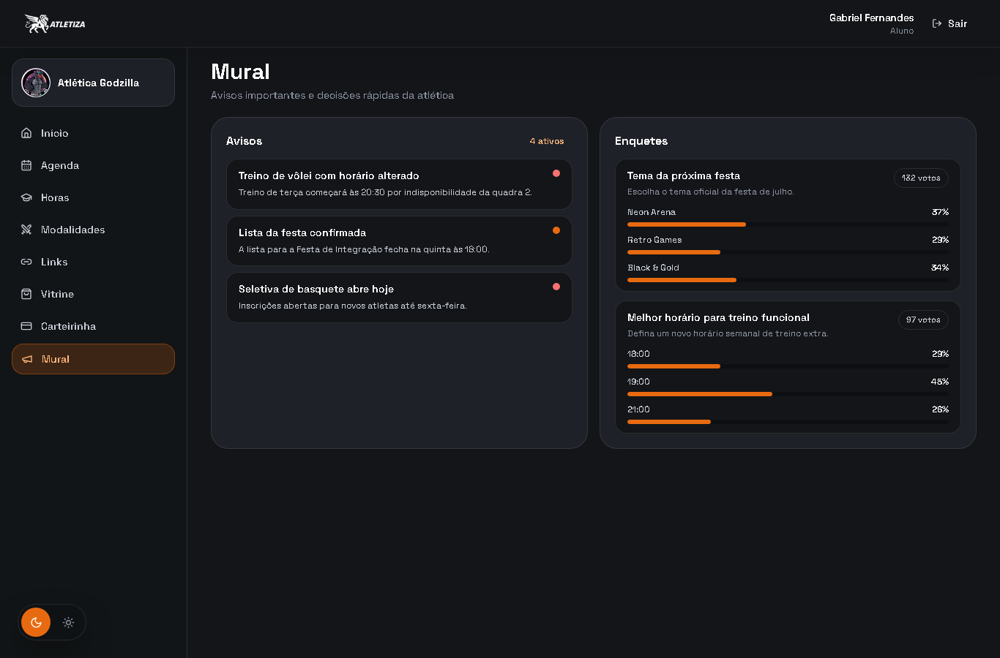
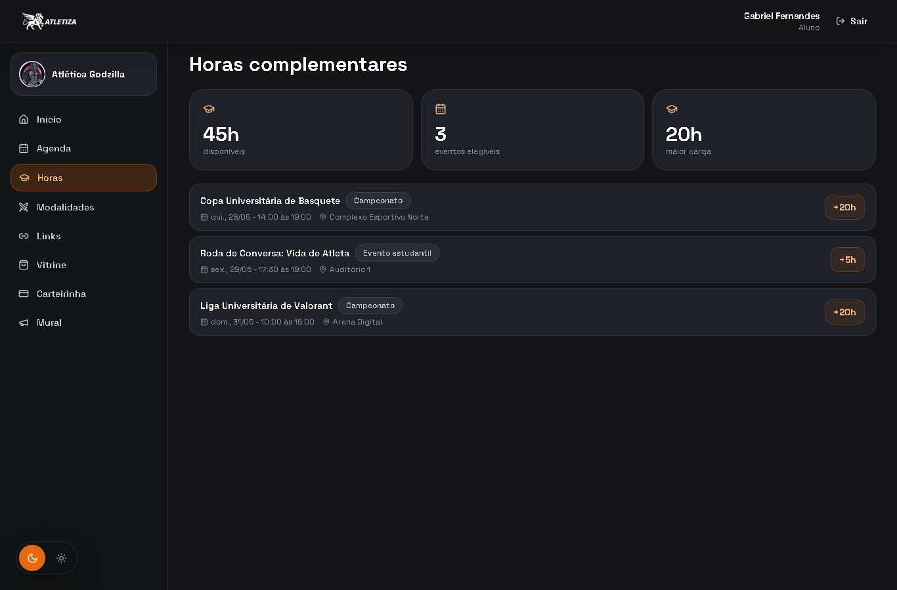
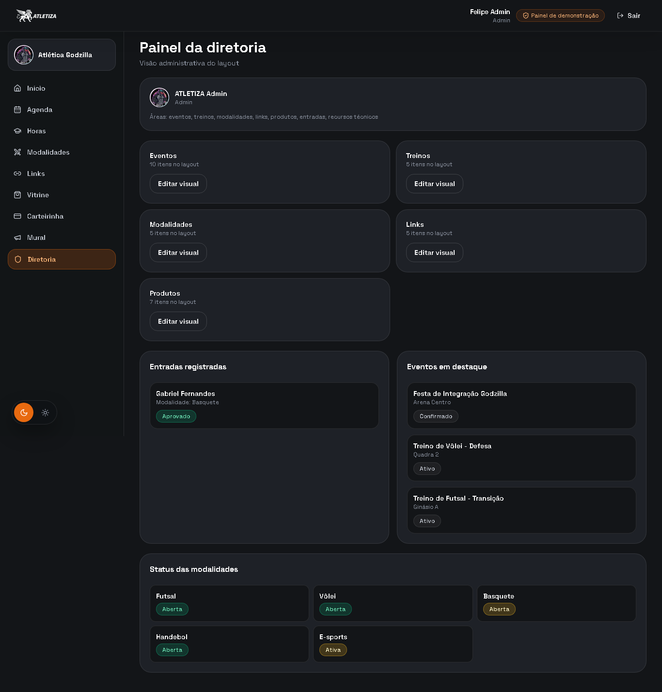
As responsabilidades foram distribuídas conforme a familiaridade e o ponto forte de cada integrante, permitindo paralelizar o trabalho e aproveitar ao máximo a janela de 48 horas:
| Integrante | Responsabilidade |
|---|---|
| Gabriel | Documentação |
| Felipe | Arquitetura |
| André | Front-end |
| Júlia | Design |
| Luiz | Back-end |
A organização partiu de uma premissa simples: cada pessoa atua onde tem mais domínio. Em vez de distribuir tarefas aleatoriamente, mapeamos a familiaridade de cada integrante e alocamos as frentes de acordo — Felipe na arquitetura técnica, Luiz no back-end, André no front-end, Júlia no design e identidade visual e Gabriel na documentação.
Essa divisão por afinidade reduziu a curva de aprendizado durante o evento e permitiu que cada frente avançasse em paralelo. O fluxo seguiu um workflow Git disciplinado: branch por feature, ciclo de implementar → testar → validar → documentar, abertura de Pull Request e remoção da branch após o merge, evitando trabalho direto na main.
Os principais obstáculos foram de negócio (domínio) mais do que puramente técnicos:
Como solucionamos: optamos por um MVP honesto e navegável. Em vez de tentar integrar tudo ao backend em 48 horas (inviável), priorizamos um produto completo na navegação e na experiência, com as regras de negócio implementadas e testadas e o que ainda é simulado claramente identificado. Isso permitiu entregar algo coeso, demonstrável e evolutivo dentro da restrição de tempo.
O grupo avalia o resultado final de forma positiva. Entregamos um MVP navegável de ponta a ponta, com identidade visual consistente, fluxos lógicos de navegação e as regras de negócio centrais das atléticas implementadas e cobertas por testes. O login está realmente integrado ao backend, e todas as telas planejadas — home, agenda, eventos, modalidades, links, vitrine, carteirinha, mural e painel da diretoria — ficaram prontas e funcionais para a demonstração.
Reconhecemos com transparência as limitações do ciclo: boa parte do conteúdo ainda é alimentada por mocks e não há, nesta versão, recuperação automática de sessão, checkout/pagamentos ou check-in. Ainda assim, o produto cumpriu o objetivo da restrição de 48 horas: não é uma ficção visual, e sim uma base real, viável e evolutiva. Com mais tempo de desenvolvimento, o caminho para torná-lo efetivamente utilizável já está estruturado.
Próximos passos planejados para evolução do produto: